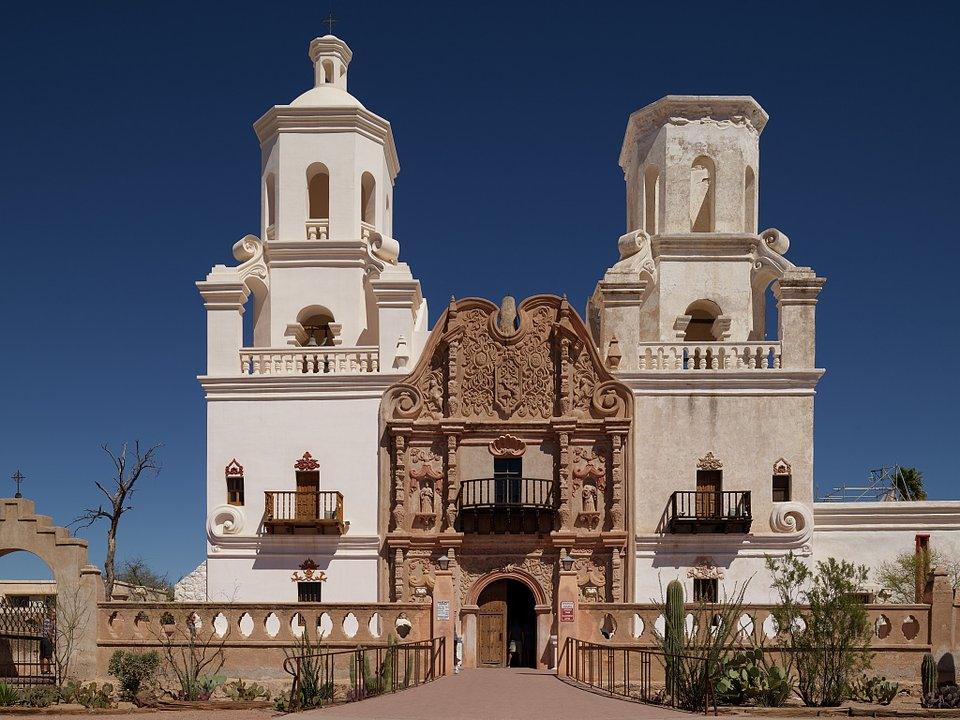

Central Tucson · Historic inn
Arizona Inn
A 1930 inn of pink adobe casitas and gardens.
Official details for Arizona InnSaguaros, Sonoran food and a famous boneyard.
Tucson is surrounded by mountains and the largest saguaro cactus forests in the country, and its food is so good it is a UNESCO City of Gastronomy. Land at Tucson International, spend a morning at the Pima Air & Space Museum among more than 400 aircraft, drive through Saguaro National Park at sunset, visit the white Mission San Xavier del Bac, and stay at the quiet, rose-gardened Arizona Inn.

Time illustration: direct distance at 150 KTAS plus 15 minutes for departure and arrival, matching the discovery page. Use ForeFlight for your actual flight plan.
KTUS, Tucson International, is a towered Class C airport at 2,643 feet with runways of 10,996 and 7,000 feet, about 15 minutes from downtown.
Tucson International Airport, Tucson, AZ
Other FBOs: Executive Air Tucson (520-445-6375) and Tucson Jet Center (520-746-1411). Class C with airline and military traffic from Davis-Monthan Air Force Base nearby; brief the procedures. Ryan Field (KRYN) is a general-aviation alternative west of town, closed when its tower is closed. No live fuel price is shown.
Desert Southwest flying: summer temperatures above 110°F with high density altitude, strong afternoon winds and turbulence, monsoon storms and dust from July to September, and long distances between airports. About 1610 nm from Myrtle Beach: two long days each way with several fuel stops. Plan a week, or overnight on the way out and back.
Rates and availability need travel dates. Book early for the February gem show.
A 1930 inn of pink adobe casitas and gardens.
Official details for Arizona InnA lively 1919 hotel with a café, bar and music club.
Official details for Hotel CongressReserve weekend dinners.
Carne seca at what claims to be the oldest family-run Mexican restaurant in the country.
Official details for El Charro CaféDinner in the inn’s dining room or on the patio.
Official details for Arizona InnBreakfast at Hotel Congress.
Official details for Cup CaféTucson’s restaurants.
Visit Tucson for More restaurantsBook boneyard tours at Pima ahead; they require advance registration.
More than 400 aircraft, plus bus tours of the boneyard at Davis-Monthan.
Pima Air & SpaceThe “White Dove of the Desert,” an 18th-century mission.
Patronato San XavierThis prototype links to the local visitor site. It does not yet match events to your travel dates.
The largest gem shows in the world.
Visit Tucson for Tucson Gem & Mineral ShowsA huge free book festival.
Visit Tucson for Tucson Festival of BooksWarm, dry days.
Visit Tucson for Best weatherCheck the local calendar when choosing a weekend, and confirm dates and tickets with the organizer.
A sample Tucson weekend. This is a two-day flight each way; plan a week. No bookings or availability confirmed.
Land at KTUS mid-morning.
Pima Air & Space Museum.
Lunch at El Charro, then back to the airport.
Land at KTUS, subject to weather, density altitude and your actual flight plan.
Check in at the Arizona Inn.
Dinner at El Charro.
Pima Air & Space and a boneyard tour.
Saguaro National Park at sunset.
Dinner at the Arizona Inn.
Mission San Xavier.
Compute takeoff performance for the temperature and allow time at the FBO.
Desert afternoons are hot, bumpy and gusty; leave in the morning.
Saguaro National Park.
Mission San Xavier.
Dinner at the Arizona Inn.
These details make the difference between an appealing list and a usable getaway.
Lodging, then boneyard tour tickets.
About 1,610 nm from Myrtle Beach: two long days each way.
Summer is extreme; fly early.
October to April.
Picks and links reviewed by WingAway Weekends. Hours, prices, menus and availability change often, so confirm directly with each place before booking. Spotted something out of date, or have a favorite we missed? Email us at hello@wingawayweekends.com.
WingAway Weekends helps you discover the destination. Use ForeFlight and current official aviation information for route, performance, weather, NOTAMs and preflight decisions. Flight planning and PIC responsibility stay with the pilot.